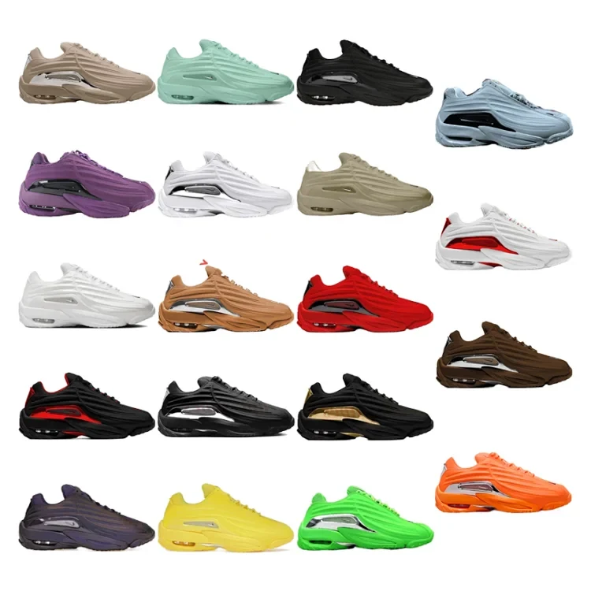
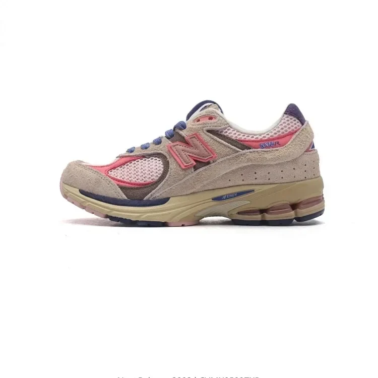
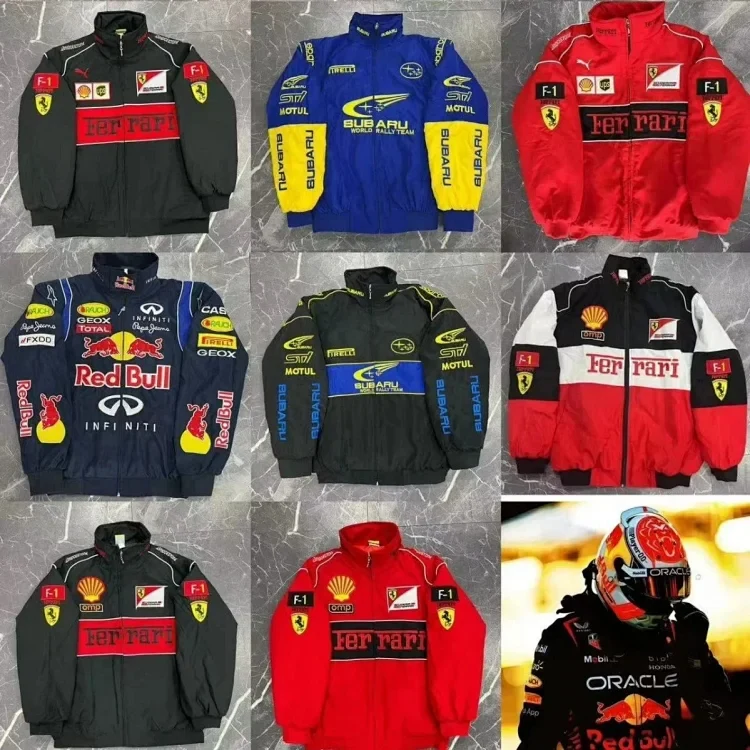
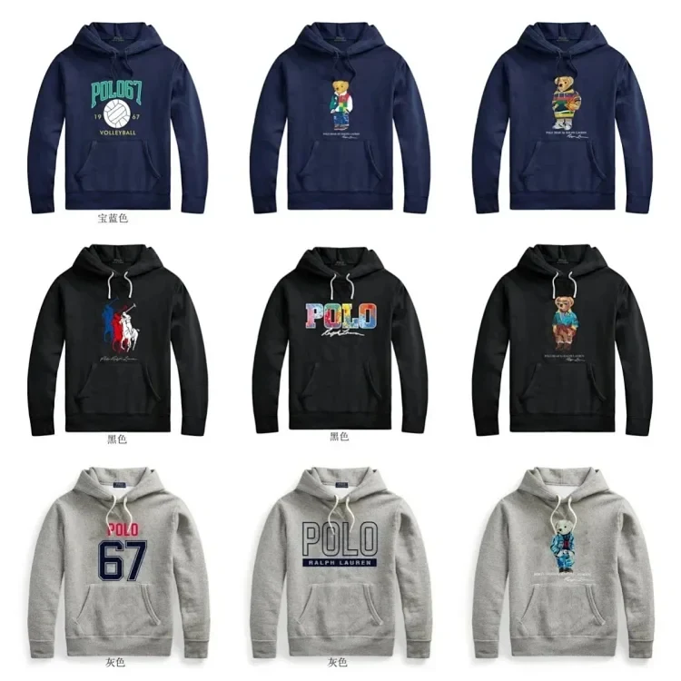
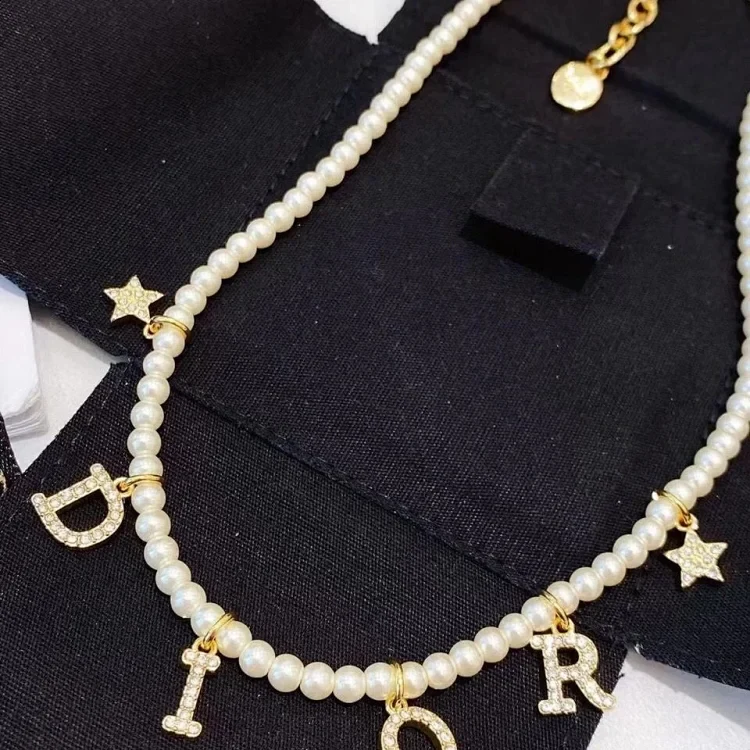

Shoes/slippers
Updated weekly research
buyer visits and guide readers
The Most Updated CSSBuy Spreadsheet 2026
Discover verified CSSBuy spreadsheet resources for shoes, streetwear and accessories. Compare sellers, understand QC, and build the perfect haul with confidence.
AJMR
10,000+buyer visits and guide readers
Explore Product Categories
Browse product categories in one consistent, research-focused layout.
Shoes/slippers
Footwear, slides and slipper collections.
T-shirt
Tee collections and everyday tops.
Fashion Clothing
Coats, sweaters and fashion apparel.
Hoodies
Pullover and zip-up hoodie resources.
Pants/Trousers
Jeans, cargos, shorts and trousers.
Leather Belt
Leather belts and waist accessories.
Fashion Bag
Backpacks, handbags and shoulder bags.
Perfume
Fragrance and perfume product resources.
Electronics
Chargers, accessories and electronics.
Other Stuff
Jewelry, glasses and miscellaneous finds.
Featured Products
Selected product listings with direct access to each product page.

Shoes/slippersNew Balance 2002 (20 Styles)
$41.73● Product ListingView Product →Fashion Bag
LV / Dior / Gucci Bag (40 Styles)
$23● Product ListingView Product →
Fashion ClothingFerrari / Subaru / Red Bull Racing F1 Jacket (12 Styles)
$27.99● Product ListingView Product →
HoodiesRalph Lauren Polo Bear Hoodie (38 Styles)
$30.24● Product ListingView Product →
Other StuffDior Necklace
$17● Product ListingView Product →Latest Buyer Guides
Practical tutorials for product research, QC and shipping decisions.

Quality Control • Updated July 2026 • 1,798 words • 11 min read
CSSBuy QC Photos Guide 2026: A Warehouse Risk-Control Workflow
Most buyers treat warehouse photos as a quick thumbs-up or thumbs-down moment. That is the wrong mental model. A CSSBuy quality-control review is better understood as a s…
Read Full Article →
Spreadsheet Strategy • Updated July 2026 • 1,735 words • 10 min read
CSSBuy Spreadsheet Guide 2026: From W2C Link to Controlled Purchase
A spreadsheet is often presented as a shortcut: open a row, copy a link, buy the item. That description is convenient but incomplete. A useful CSSBuy spreadsheet is not a…
Read Full Article →
Shipping Strategy • Updated July 2026 • 1,797 words • 11 min read
CSSBuy Shipping Cost Guide 2026: Chargeable Weight, Routes and Parcel Planning
International shipping is where an inexpensive haul can become expensive, delayed, or impossible. The usual mistake is to treat freight as a final checkout number that ap…
Read Full Article →Compare Agents.
Choose Better.
Use the comparison as a research starting point and verify live policies before ordering.
Compare Shipping Factors →| Research factor | CSSBuy | Superbuy | Sugargoo | Other agents |
|---|---|---|---|---|
| Spreadsheet ecosystem | Strong | Available | Available | Varies |
| QC resources | Detailed | Detailed | Detailed | Varies |
| Shipping choices | Multiple | Multiple | Multiple | Varies |
| Independent guides | ★★★★★ | ★★★★☆ | ★★★★☆ | ★★★☆☆ |
Reverse Purchasing FAQ
Answers for ordering from Chinese sellers through CSSBuy, from purchase submission to warehouse inspection and international delivery.
01What does reverse purchasing mean when using CSSBuy?
+
Reverse purchasing means you provide a Chinese marketplace link or manually enter the product details, then CSSBuy places the domestic order on your behalf. You first pay for the item and Chinese local delivery. After the seller sends it to the warehouse, CSSBuy inspects and stores it, and you later choose an international shipping route.
02Can CSSBuy purchase an item when the product link cannot be read automatically?
+
Yes. CSSBuy’s official Buy For Me workflow allows buyers to fill in the product information manually. Enter the exact title, option, quantity, price, domestic freight and clear purchase notes so the agent can confirm the order correctly.
03Which costs are paid before CSSBuy buys the item?
+
At the purchase stage, the buyer pays the product price and the seller’s Chinese domestic delivery charge. International freight is handled later, after the item has reached the warehouse and you submit one or more stored items for delivery.
04What happens after the seller delivers the item to the CSSBuy warehouse?
+
CSSBuy states that warehouse staff perform quality inspection and take photos for the buyer to view. The item remains in the warehouse until you approve it, request a return when eligible, or include it in an international parcel.
05Can I return an item after checking the warehouse photos?
+
CSSBuy’s About page says products that do not meet the buyer’s required standard may be returned to the seller within seven days. Return eligibility also depends on the seller, product type, timing and the live order status.
06How long can reverse-purchased items remain in the CSSBuy warehouse?
+
CSSBuy currently publishes up to 90 days of free warehouse storage. Record the warehouse arrival date and arrange returns or parcel submission well before the deadline.
07Can several orders from different Chinese sellers be combined into one parcel?
+
Yes. CSSBuy lists package consolidation as a warehouse service. Items from separate sellers can be stored and later selected together for an international parcel, provided their restrictions and route requirements are compatible.
08Which packing services can I request before international shipping?
+
CSSBuy’s service pages list options such as packaging removal, reinforced packaging, vacuum packaging, label cutting and insurance. Choose them according to the item and its likely shipping risk.
09How is the international shipping charge calculated?
+
The initial international shipping payment is a deposit based on estimated weight, destination and the selected route. The logistics company verifies the final size and weight, and the difference is reconciled through the buyer’s account.
10Can every reverse-purchased product use every shipping route?
+
No. Liquids, fragrances, batteries, magnets, oversized goods and other sensitive categories can reduce the available routes. Check route eligibility before purchasing.
11Are customs tax, delays or parcel loss guaranteed against?
+
No. International shipping can involve delays, customs inspection, taxes, confiscation, damage or missing parcels. Review route terms, insurance coverage and destination rules before submission.
12How do I track a reverse-purchased parcel or contact CSSBuy about it?
+
After dispatch, the parcel can be tracked in User Center under My Parcel. The relevant parcel page provides an Add Note function for contacting support about that shipment.
Policy note: answers are based on CSSBuy’s public purchasing, shipping and warehouse-policy materials. Live rules can change.